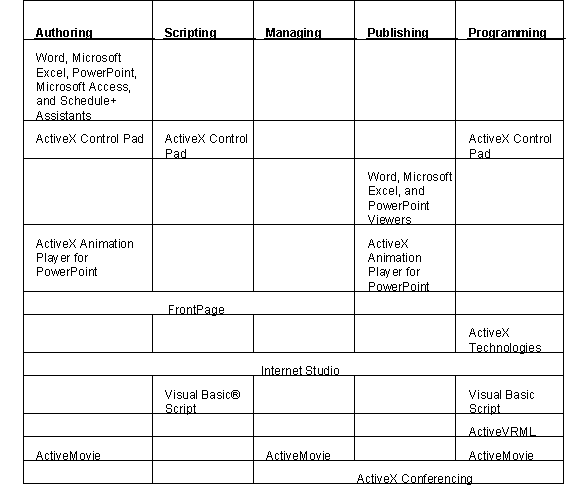
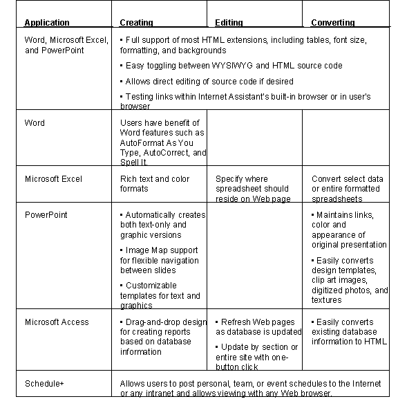

|
| ||
|
| ||
Microsoft Corporation
Updated March 30, 1999
Contents
About This Guide
The Race to Cyberspace
The Internet
The World Wide Web
Intranets
Publishing on the World Wide Web
Why the Web?
The Web Publishing Process
Microsoft Tools for the World Wide Web
Microsoft's Internet Strategy
Overview of Microsoft Solutions
Quick and Easy Solutions for Information Sharing
Mid-Range Webtop Publishing Tools
Technology for Advanced Web Publishing
Microsoft Supporting Tools for Web Publishing
Additional Resources
Resources Online
Note: The information contained in this document represents the current view of Microsoft Corporation on the issues discussed as of the date of publication. Because Microsoft must respond to changing market conditions, it should not be interpreted to be a commitment on the part of Microsoft, and Microsoft cannot guarantee the accuracy of any information presented after the date of publication. This document is for informational purposes only. Microsoft makes no warranties, express or implied, in this document.
The Guide to Microsoft Internet Publishing Tools provides an overview of the activities involved in publishing on the World Wide Web and Microsoft's current software solutions for those activities. This guide is intended for readers with little or limited knowledge of online technology as well as experienced Web publishers. A brief overview of the Internet, the World Wide Web, and the growing use of Internet technology for internal corporate networks (called "intranets") is included.
Following this overview, the guide includes two main sections -- the first is on Web publishing in general; the balance focuses on Microsoft products. The "generic" information and the Microsoft-specific information are arranged around a five-part model of Web publishing activities. This model has been devised to provide a structure of common terms and concepts. In reality, Web publishing projects are as diverse as the people, tools, and objectives involved. Therefore, the five basic activities of this model may not apply to every project. The categories of Authoring, Scripting, Management, Publishing, and Programming are arranged in order of complexity -- from the relatively simple activity of authoring to the more sophisticated technology and results surrounding programming languages.
The information on Microsoft's solutions for Web publishing is also arranged in order of complexity, ranging from simple to sophisticated. At the low end, Microsoft® Internet Assistants allow any Microsoft Office user to publish their existing Microsoft Excel, Microsoft PowerPoint®, Microsoft Access, and Microsoft Schedule+ documents on the Web quickly and easily without having to learn any new software. At the mid-range, the Microsoft FrontPage™ Web authoring and management tool allows Office users to create and manage high-quality, professional-looking Web sites without programming. At the high end, professional Web publishers can take advantage of a variety of Microsoft solutions, including the Microsoft ActiveX™ Control Pad, Microsoft Visual InterDev™ (previously code-named "Internet Studio"), Microsoft Visual Basic® Scripting Edition (VBScript), and Microsoft ActiveMovie™ technology to build sophisticated functionality into interactive Web sites. This guide contains an overview of all of these products and others, as well as ActiveX controls, Microsoft's component-based technology for creating Internet applications and integrating browser technology and desktop operating systems.
Most people are still going to the local grocery store, the neighborhood mall, and the corner drugstore to purchase basic goods and services. And most people still use one or more variations of the telephone, the television, the daily newspaper, and the much-maligned staff meeting to stay informed and stay in touch with each other. But a rapidly growing segment of the population is also looking to the Internet to extend or replace traditional modes of enterprise, entertainment, and information exchange.
The recent focus on the Internet has been fueled by technological advances that deliver full-color, high-resolution images and multimedia content to networked computers in homes and offices around the world. This visual, interactive element of the Internet is called the World Wide Web. The Web adds interest, excitement, and ease-of-use to an otherwise utilitarian mode of communication.
Organizations and individuals are finding a multitude of uses for this emerging technology. Companies are finding that the Internet is a resource for learning about potential customers, vendors, and competitors. Businesses are establishing online customer service and feedback systems. Enterprises are marketing, and sometimes even selling, products and services through their Web sites.
Businesses have discovered that Internet technology is especially effective for dispersing information within their own companies. Corporations are establishing intranets, or internal networks, by linking employees to each other and to company data via the use of e-mail, browsers, Web pages, hyperlinks, and database servers. This technology is enabling people to use computers more effectively, to collaborate on projects, and to maintain a continuous, timely flow of information throughout the organization.
The Internet is a massive collection of computer networks that connect millions of computers, people, software programs, databases, and files. The parts and players are spread around the world and interact continuously from a variety of operating platforms. The advent of Transmission Control Protocol and Internet Protocol (TCP/IP) made this possible.
The Internet was created in 1973 by the U.S. Defense Advanced Research Projects Agency (DARPA) to ensure that their communications systems would continue to work in the event of war. For most of its existence, the Internet was primarily a research and academic network. More recently, commercial enterprises have recognized the Internet's potential. Today, people around the world can access and use the Internet's resources through direct Internet connections via a UNIX system, through connections provided by Internet service providers (ISPs), or through commercial services such as The Microsoft Network™ (MSN) and America Online®.
Once connected to the Internet, users interact with other computers following a client/server model. The resources of the Internet -- information and services -- are provided through host computers, also known as servers. The server is the computer system that contains information such as electronic mail, database information, and text files. A user, or "client," accesses those resources via client programs that use TCP/IP to deliver the information in the appropriate format for the user's computer.
By some estimations, there are now more than 50 million people accessing the Internet, and the number is growing exponentially every day. This creates potentially limitless new business opportunities in providing information and services via this medium. Enterprising individuals and corporations are establishing servers to provide e-mail services, database access, online publications, marketing information, and electronic transactions such as banking and shopping.
In spite of the intense interest in capitalizing on the Internet, relatively few people have yet to realize great financial gains through online commerce. The most apparent exceptions are those who provide software, hardware, and services that actually get people connected to the Internet. With so many people scrambling to get connected and establish an Internet presence, it is only a matter of time before more diverse and viable online enterprises emerge.
Individuals and businesses may establish a presence and provide services through several channels of networking, including e-mail, File Transfer Protocol (FTP), Gopher, and the World Wide Web. The "Web" is the newest and fastest-growing segment of these Internet tools. It is the leading tool for establishing a business presence on the Internet. A Web server presence is the most exciting way to publish on the Internet because it displays information graphically with interactive and multimedia capabilities.
The World Wide Web is primarily the creation of Tim Berners-Lee and Robert Cailleau, who, over a period from 1989 to the early 1990s, advanced the idea of a tool that would allow users to easily access Internet resources. This tool, called hypertext, provides a means for navigating between linked pieces of information without using complex, machine-dependent search routines. By simply selecting a highlighted link, the user moves from one place to another within a document or from one document to another.
Hypertext links are created using Hypertext Markup Language (HTML), the language that allows documents to be viewed from various computer platforms in a fairly consistent, graphical format. HTML "tags" allow the creator to impart a particular look to the document and build in these links. The content displays as a page and text is formatted in various fonts, styles, and sizes. Pages may also contain pictures, sounds, and movies.
When pages contain links to other pages or documents on the Internet, a "web" of information is created. Web sites may even contain links to other tools of the Internet, such as FTP and Gopher.
Hypertext Transmission Protocol (HTTP) is the standard language that allows Web clients and servers to communicate. HTTP enables servers to publish information in a format that can be accessed by various client browsers, including Microsoft Internet Explorer and Netscape™ Navigator™.
The same technology used to move around the Internet can be used in internal networks, called intranets. The capabilities of the Web browser can be leveraged by companies or organizations to create a network for information sharing within their own closed environment. Intranets can provide a dynamic, timely vehicle for sharing information and minimizing the "paper chase. "
Intranets can also provide a democratic platform for communication among employees if everyone has access to the network and easy-to-use publishing tools for posting information. Intranets represent a rapid-growth market for Internet technology and provide additional impetus for Web publishing tools and capabilities.
Most of the tools of the Internet deliver information as black text on a white background, with minimal formatting and no graphic images. While this may be adequate for electronic mail messages and for transferring research files, it lacks the visual interest of other mediums such as television, video, and print matter such as newspapers and magazines. Web technology provides a means for more visual expression via the Internet. Web pages can be formatted with various text sizes and colors, can display original graphics and photos, and even play audio and video clips. Visitors to the Web can move from topic to topic, site to site, guided to related topics by simply clicking on hyperlinks built into Web pages. These features make the World Wide Web the most compelling tool for today's Internet surfers. Web technology has caused an explosive growth in the use of the Internet as users create and access resources such as:
Publishing on the Web can be defined as simply as "write some stuff, add some tags, send it to a server, and then see what happens. " In reality, the steps are either more sophisticated or even simpler, depending on what you want to accomplish and how you go about it. Until recently, a person had to have programming skills and graphic design talents to create a Web page. Tools and services are emerging that make it easier for the average computer user to create and maintain a simple Web site. At the same time, multimedia ambitions are driving more complex enhancements to high-end publishing technology and programming languages.
The activities related to each publishing project, whether the goal is a personal home page or a sophisticated interactive site, will vary with the technology used, the skill required, and the results realized.
This guide organizes Web publishing into the follow categories of activities to facilitate description of the variety of solutions available:
All Web publishing projects will not require all of these activities. Furthermore, there are a variety of solutions for each of these activities. A simple home page can be authored by coding with HTML tags or by converting an existing document to HTML without knowing the language. The latter solution is provided through use of an application assistant. In either case, varying degrees of simple interactivity can be created without performing more complex scripting and programming activities. When a site includes features for processing data and/or responding back to the user, the publishing activities get more sophisticated. Such features may require use of scripting languages or mini-application programs called applets.
The next section of this guide outlines Microsoft's strategy for providing flexible solutions to meet this wide range of Web publishing needs.
Microsoft's strategy is to provide customers with what they need to take full advantage of what the Internet has to offer. Basically, Microsoft's strategy is to:
This strategy requires work on all levels; the client, the server and the tools used for application development, information management, and publishing. Essentially, this strategy is simply an extension of Microsoft's overall computing strategy -- a network foundation with a family of integrated server applications, distributed object and systems technology, and the Win32® and ActiveX Technologies. This allows integration of the front end, with the server, and all back ends, which include all servers and applications on the Internet or an intranet.
Client
On the desktop, the Windows 95 and Windows NT® Workstation 4.0 operating systems have been designed to take advantage of the Internet, and they include a powerful browser -- the Microsoft Internet Explorer. This browser, integrated with Windows 95 and Windows NT Workstation, makes browsing the Internet as easy as using Windows 95 with the power of a 32-bit application. A set-up wizard has been included to make it very easy to connect to the Internet for the first time.
Server
Windows NT Server (with the integrated Internet Information Server) and the Microsoft BackOffice™ family suite of applications currently provide support for the Internet. With the ActiveX Technologies and the ActiveX Server Framework and their extensions for the Internet Information Server -- the Internet Server application programming interface (ISAPI) -- developers can also extend existing server applications to run across the Internet. These extensions will continue to make it easier to integrate database, mail, and other platforms and solutions into Internet applications.
Tools
With Internet Assistants for Microsoft Office, anyone who can use Office can create Internet documents as well. The Internet Assistants provide an easy-to-use interface for inserting hyperlinks, Internet forms, and all of the formatting that people use most often.
For those more involved in Web document publishing, FrontPage provides a client-server architecture that supports authoring, scripting, and Web-site management. FrontPage provides a graphical means for managing complex Web sites composed of many documents and images. Wizards and templates are also included for easily creating Web pages.
With ActiveX Technologies, Microsoft provides developers and content providers with a set of open technologies that help bring the power of the personal computer to the ubiquitous connectivity of the Internet. ActiveX Technologies takes the Internet beyond static documents to provide users with a new generation of more active, exciting, and useful experiences. The new Microsoft ActiveX Control Pad makes it easy for a wide variety of customers, including both designers and developers, to add this compelling ActiveX content to any Web page.
Microsoft Visual InterDev ActiveMovie will provide the tools that commercial publishers and professional developers require to create sophisticated, dynamic interactive Web applications.
These integrated Microsoft products allow users to take full advantage of the technologies and resources of the Internet. The next section of this guide provides an overview of these Microsoft solutions for Internet and intranet publishing.
Microsoft is committed to providing products that span the broad profile of today's Web publishers -- from newbies to Webmasters. As illustrated in Table 1, Microsoft has tailored solutions for every user and every publishing project:

Table 1. Microsoft solutions for publishing on the Web
With the rapid growth of both the Internet and intranets, today's general business users need to be able to easily create, edit, and convert files in the environment with which they are already familiar. Internet Assistants for Microsoft Office applications make authoring Internet documents a natural extension of the user's desktop experience. Assistants allow users to easily convert Microsoft Excel spreadsheets, PowerPoint presentations, Microsoft Access database information, and Schedule+ calendars into HTML format without users having to learn HTML.
The Internet Assistants are a no-charge add-on that come with a built-in browser. The user can easily move from editing in a WYSIWYG ("What You See Is What You Get") environment to testing hypertext links as they are incorporated. By authoring from within Word, Microsoft Excel, or PowerPoint, users are able to take advantage of the applications' features. Formatted Microsoft Excel data and links within PowerPoint presentations are preserved in the conversion process.
Internet Assistants are ideal for creating multimedia Web pages from existing source documents and creating links between other documents on a LAN or the Internet. With the help of Internet Assistants, anyone who uses Office applications can be a Web author. Microsoft Excel, PowerPoint, Microsoft Access, and Schedule+ documents can be published on the Internet or incorporated into a corporate intranet and viewed with any browser.

Table 2. Authoring features of Internet Assistants
For users who want their published documents to appear as they intend and not as a particular browser renders, Microsoft offers viewers for Word, Microsoft Excel, and PowerPoint. Viewers automatically configure as a helper application for Web browsers so that users may view and follow hyperlinks in documents on the Internet or an intranet.
With the ActiveX Animation Player for Microsoft PowerPoint for Windows 95, users of the PowerPoint presentation graphics program can easily create animations for the Internet or intranets. The ActiveX Animation Publisher adds the command "Export for Internet" to the PowerPoint File menu. The Animation Publisher optimizes your files for the Internet by compressing them and also creates all the necessary HTML files. There's no need to work in HTML because the Animation Publisher does all the coding. The Animation Publisher makes it easy to create multimedia pages for the Web without needing to purchase anything additional or learning such programming languages as HTML or Java. In addition, the ActiveX Animation Publisher is a great complement to Internet Assistant for PowerPoint. Each tool can be used to fulfill a specific Web publishing need. If the Web page is going to be mostly text and needs to be displayed to users on every platform, use Internet Assistant. If the Web page is being designed for viewing on the Windows 95 or Windows NT platform and needs to grab the attention of the audience with a high-fidelity multimedia presentation, use the ActiveX Animation Player. Or, use a combination of both.
The ActiveX Animation Player differs from the PowerPoint 95 Viewer in two key ways. First, the PowerPoint 95 Viewer is intended for standalone use and does not act as a plug-in for Web browsers. The Animation Player was designed and optimized for the Web and works as a plug-in for Microsoft Internet Explorer and Netscape Navigator. Second, PowerPoint 95 Viewer does not support compressed files. Because the Animation Player was designed and optimized for Web publishing, it does support compressed files.
FrontPage software provides a versatile solution for an even wider range of Web publishing activities. FrontPage is focused on making basic Web document publishing and site management easy for business professionals and end users who are not full-time Web publishing professionals.
Using the same visual interface as Windows, FrontPage, like Internet Assistants, allows users to create multimedia Web sites with just a few mouse clicks. FrontPage enables nonexpert users to create and maintain sophisticated, interactive sites from their desktop with a powerful yet simple "webtop publishing" system.
FrontPage can do everything Internet Assistants can do, such as convert existing documents and allow WYSIWYG editing. But FrontPage also allows users to add advanced capabilities to their sites such as discussion groups, full-text searches, surveys, registration forms, and, eventually, online transactions without complicated programming.
FrontPage Web authoring and management tools provide everything users need to get their Internet or intranet Web sites up and running the fast and easy way while at the same time giving users expanded control over their Web sites with integrated, cross-platform authoring, scripting, and site management tools.
Intuitive authoring features
Image Editing Tools -- scalable JPEG compression and transparent GIF image creation.
Break Below Images -- options include clearing left, right, or both margins so that text is below any image floating either left or right.
Integration with Microsoft Office
Advanced site management tools
Outline View: A hierarchical representation of your Web site. Icons indicate the different kinds of pages in your Web site. You can expand the view, showing all links to images and pages, or you can collapse the view for a higher-level picture.
Link View: A graphical display of your Web site. Icons and titles are displayed with arrows between pages indicating the direction of each link.
Summary View: A sortable list showing the properties of each page, image, or other file: title, author, modification date, creation date, and any comments you've added.
Flexible client/server architecture
FrontPage fosters collaboration by enabling multiple users to simultaneously update different pages on the same server. All communication between local and remote sites is secure and encrypted. Access is controlled with password and IP address user-authentication to keep unwanted visitors from modifying information. Setting and modifying these rights is as simple as pointing and clicking. The use of firewalls on the network is also supported via proxy servers.
ActiveX technologies form the building blocks for creating interactive content using software components, scripts, and existing applications. ActiveX technologies are based on OLE Controls. These technologies make it easy for the broadest range of software developers and Web designers to build dynamic content for the Internet and the PC. The key benefit of using ActiveX technologies is the ability to integrate applications into Web browsers so that data managed by those applications becomes accessible as Web pages. ActiveX Technologies embrace Internet standards and give users a rich, open framework for innovation while taking full advantage of their investments in applications, tools, and source code.
ActiveX technologies will also bring an integrated navigation system to the desktop, allowing users to browse documents in the same linked method they currently use to browse the Web. Microsoft's "Sweeper" initiative will extend the use of Microsoft's Internet browser, the Internet Explorer, to the operating system. Users will move seamlessly between their desktops, intranets, and the Internet.
ActiveX technologies consist of the ActiveX controls (formerly OLE Controls) and the ActiveX Server Framework. ActiveX controls are small, fast, full-featured components for the Internet, intranets, and the desktop. They represent the building blocks of active content and work with a variety of programming languages. ActiveX controls are created with OLE Scripting -- an open, standard technology that allows developers to create their own applications. The OLE Scripting infrastructure allows developers to plug any scripting engine into their applications. Visual Basic Script and JavaScript™ enable developers to link ActiveX controls and Java applets and allow developers to mix and match components for the functionality desired, regardless of system platform. ActiveX enables developers to add active content to Web pages and OLE Scripting extensions for HTML allows visitors to activate those applications from within the page they are viewing.
Another component of ActiveX technologies is the ActiveX server framework. This framework, based on the Microsoft Internet Information Server (IIS) integrated with the Windows NT Server networking operating system, allows developers to create the same rich, interactive applications for the server, using their existing experience, knowledge, and tools. The ActiveX server framework enables Web developers to take advantage of the power of the Microsoft BackOffice family.
The goal of Microsoft's ActiveX technologies is to make it easy for developers to build interactivity into their Web sites and to make it simple for users to take advantage of this interactivity from any browser, operating system, or computing platform.
The Microsoft ActiveX Control Pad is an authoring tool that makes it easy to author Web pages that incorporate leading-edge ActiveX content. With the ActiveX Control Pad, users can add ActiveX controls and scripting (Visual Basic Script or JavaScript) to any HTML page with simple point-and-click ease. The ActiveX Control Pad works in conjunction with WYSIWYG HTML editors. Once an HTML document has been created, the page can be easily activated with live content and scripting. The ActiveX Control Pad also includes WYSIWYG support for authoring 2-D layout regions, the latest HTML Layout extensions published by the W3C.
The ActiveX Control Pad provides the following core features:
September 4, 1997 Editor's note: The HTML Layout Control technology, orginally released with Internet Explorer 3.0, is now natively supported by Internet Explorer 4.0. Please see the HTML Layout Control home page for further information.
The ActiveX Control Pad can be used with any of the more than one thousand ActiveX controls available from Microsoft and third parties. The tool is available for free download at http://msdn.microsoft.com/workshop/misc/cpad/default.asp.
Most Web pages today consist simply of static text and graphical representations. Visual Basic Scripting (VBScript) is a high-end programming tool that enables live, active, interesting, and smart Web pages. Using VBScript, developers can build pages that respond to questions and queries, ask questions, check user data, calculate expressions, link to other applications, and connect to OLE (object linking and embedded) controls, applets, and three-dimensional (3-D) animations.
VBScript is an Internet scripting language based on Microsoft Visual Basic. There are more than three million developers creating applications with Visual Basic and Visual Basic for Applications every day. Just as Visual Basic made it easier to develop Windows-based applications (and Visual Basic for Applications did the same for Microsoft Office-based applications), this subset of the Visual Basic language will revolutionize Internet application development.
VBScript enables developers to write Visual Basic code that lives in the HTML document. The process works like this: HTML documents have tags that define heading levels, basic user interface control types, embedded graphics, and other features in addition to actual text. Browsers can also employ "helper applications" to extend the features of HTML documents. If a browser reads a tag that it doesn't know how to display, it checks the tag type against an index of helper applications. The appropriate helper application is called to handle the data between the <StartTag> and </EndTag> markers.
This process is similar to double-clicking on a .doc file in File Manager or Windows Explorer. File Manager checks the .doc file extension against an index of file extensions and then runs Microsoft Word, which opens the document selected. The same process occurs in a browser: The tag points to a helper application, the helper application is run, and the data is displayed or executed as intended. Developers can use VBScript code to create and embed interactivity into a Web page.
This fast, cross-platform subset of the Visual Basic programming system will be provided as part of the Microsoft Internet platform, and it will be licensed at no cost to application, browser, and tool vendors who create Internet solutions. The ActiveX Control Pad authoring tool includes a Script Wizard that makes it easy to add VBScript to any HTML page.
Visual InterDev (previously code-named "Internet Studio"), targeted for release in the fourth quarter of 1996, integrates the technology of ActiveX and VBScript in a sophisticated tool for professional publishers and developers to create and manage interactive Web pages and applications. The additional capacity for developing high-end Web applications sets this product apart from Internet Assistants and FrontPage, which are targeted for creating Web documents with limited functionality.
This full-featured authoring environment will let the user easily create Web sites that incorporate advanced client- and server-side programming, powerful database connectivity options, and rich ActiveX content. Users can work with familiar production tools and incorporate content into full-featured "Weblications."
Visual InterDev is the primary tool for managing ActiveX controls and provides an excellent solution for high-end publishing, such as creating a powerful corporate presence on the Internet, conducting online transactions, and other sophisticated applications.
ActiveMovie technology is part of the rapidly expanding family of technologies that make it easier for developers to create interactive content for the Internet and intranets. ActiveMovie Streaming Format (ASF) is add-on technology that allows transmission of real-time audio and video content in many types of applications. This means that users accessing a multimedia Web site can begin viewing audio images and hearing audio content right away, rather than wasting valuable online time waiting for files to download.
ASF is an efficient data format specification for storing and streaming synchronized multimedia content. ASF allows multiple types of data -- for example, audio objects, still images, uniform resource locators (URLs), and HTML pages -- to be combined into a single, synchronized multimedia stream that can be stored on a variety of servers and transmitted over a range of networks. Because ASF is a streaming format, audio, and images begin playing almost immediately; without ASF, users must complete a time-consuming download of an audio or a video file before it begins to play.
The ASF add-on toolkit includes:
Editor's note: (January 6, 1997) ActiveMovie 2.0 can now be downloaded as part of DirectX 5.1 Media run time.
The Microsoft ActiveX Conferencing platform is a suite of technologies that enables real-time, multiparty, multimedia communication over the Internet. In effect, these technologies and the associated interfaces turn each and every PC into a new kind of highly programmable telephone, capable of not only audio communication, but video and data communication as well.
In a nutshell, Microsoft ActiveX Conferencing enables real-time, multimedia communication over the Internet or intranets.
Publishing on the Web requires a host computer and operating system to "serve" the content developed with the tools already described. Traditionally, Internet server needs have been met with high-powered and expensive UNIX platforms. Today, with the increased use of the Internet and the rapid implementation of high-powered, less expensive Windows NT-based servers, a new generation of server software is being built to service the demand. Some of these Web server packages allow users to publish their Web pages directly from their own workstations without "posting" them through the larger UNIX or Windows NT-based servers. These personal Web servers generally do not have the power to run sophisticated, highly interactive Web sites, but they are very useful for creating and testing Web pages as they are developed and for hosting other limited activities.
In addition to the trend toward personal Web servers, a new breed of high-performance, secure Internet/intranet Web servers are emerging on the market. The Microsoft Internet Information Server (IIS) is one of the new breed. The Microsoft Internet Information Server is the only Web server integrated into Windows NT Server. Because it integrates Windows NT security and networking, you can add the software to an existing computer and use existing user accounts -- it is not necessary to use a dedicated computer to run IIS.
IIS is ideal for running internal networks from existing file and printer servers, allowing small workgroups to establish an intranet. In a larger organization, each department might run IIS on an existing file server for workgroup-specific information. A central information server might be used for company-wide information such as directories, policies, procedures, and employee benefit information.
The Microsoft Internet Information Server can be used for a multitude of purposes, including:
IIS has proven to be the fastest, most secure Windows NT-based Web server and includes Web-authoring features that make it a powerful platform for creating and managing Web applications.
Microsoft Internet Information Server features:
Because IIS integrates well with almost any existing environment, it is an ideal Internet and intranet solution. Using IIS, an organization can host personal Web pages, provide access to customized workgroup applications, and process requests for information from databases. The server can be configured to allow access of these functions both locally and from remote sites.
Microsoft SQL Server
Corporations and small businesses are looking to the Internet as a resource for identifying new customers, as a window to their competition, and as a method to service existing customer needs. They are also establishing intranets to publish internal information, encourage collaboration, and receive essential feedback. The ability to store, manage, access, and publish information from an internal database is essential in these scenarios. To take full advantage of Internet and intranet technology, organizations must be able to easily and quickly update information on their Web sites and viewers must have ready access to timely, accurate information.
Microsoft SQL Server provides enhanced capability for accessing and processing information from Sequential Query Language (SQL) databases. SQL databases allow users to request information beyond that provided by static Web pages. Using the SQL server, organizations can continually store and update information in their databases, which can then be sorted, calculated, processed, or otherwise manipulated to give viewers current status in a variety of data configurations.
Microsoft SQL Server is the first relational database management system (RDBMS) designed specifically for distributed client/server computing. SQL functions as a rich content management engine for Web sites, storing and delivering data that enables data-driven interactive Web applications. The combined power of IIS and Microsoft SQL Server provide optimum performance for interactive, database-driven Web sites.
Microsoft SQL Server 6.5 includes the SQL Server Web Assistant with a step-by-step, wizard-like interface to walk a database administrator or Webmaster through the process of publishing database-driven Web sites. The Web Assistant lets Microsoft SQL Server automatically generate HTML pages, including those created with templates, and update them as data changes.
Microsoft SNA Server is a gateway that connects LAN-based PCs with IBM® host systems running Systems Network Architecture (SNA) protocols. Because a huge percentage of corporate information resides on IBM host systems, using SNA Server in conjunction with the Internet opens the door for easier access to this data to all users, regardless of operating system platform.
The ODBC/DRDA driver component for SNA Server 2.11 allows SNA Server to make data stored in host DBMSs accessible via Web browsers over corporate intranets or the Internet.
For listings from Microsoft Press, visit http://mspress.microsoft.com  .
.
Did you find this material useful? Gripes? Compliments? Suggestions for other articles? Write us!
© 1999 Microsoft Corporation. All rights reserved. Terms of use.